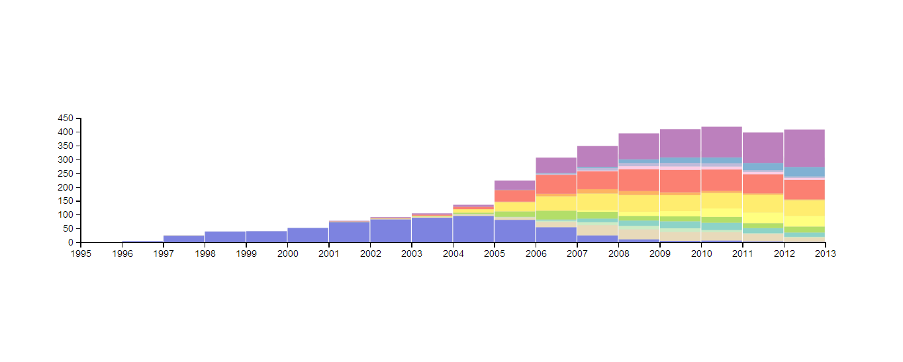
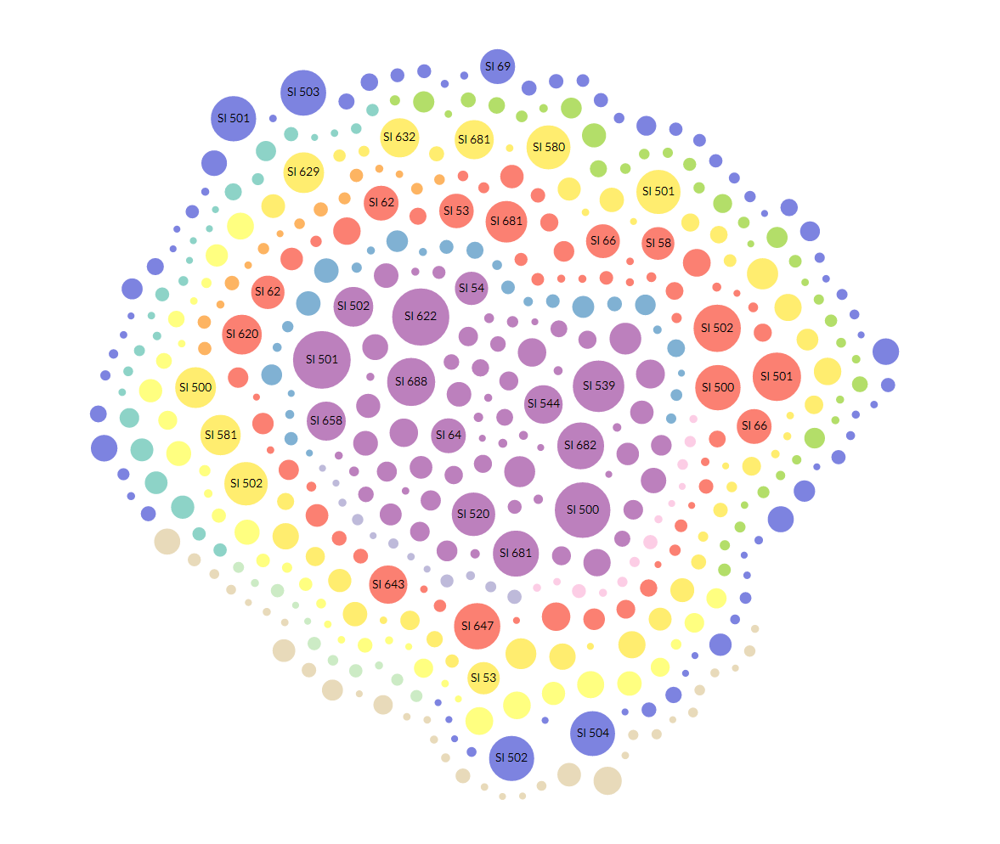
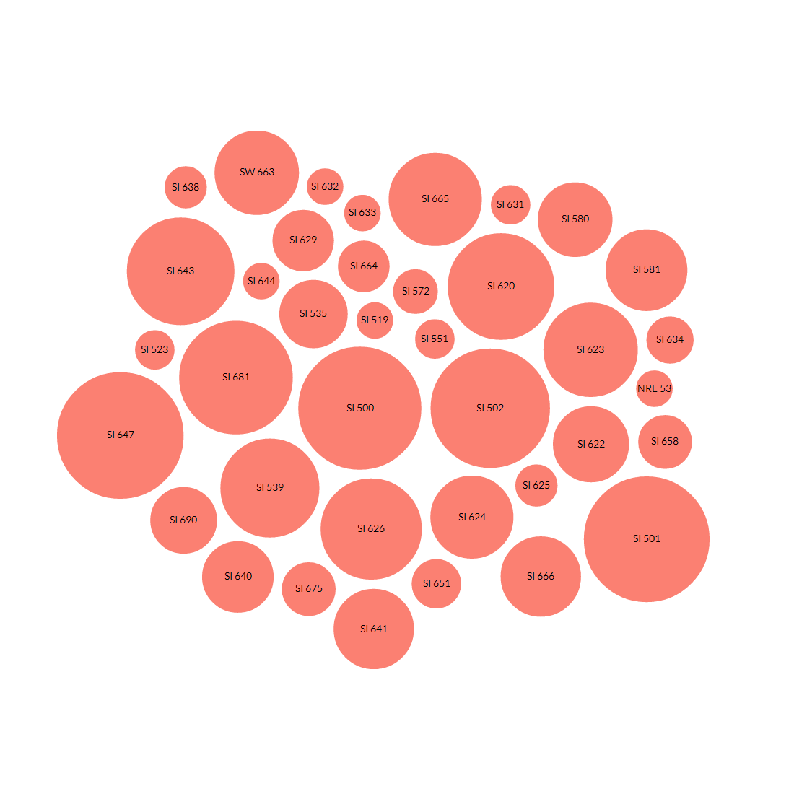
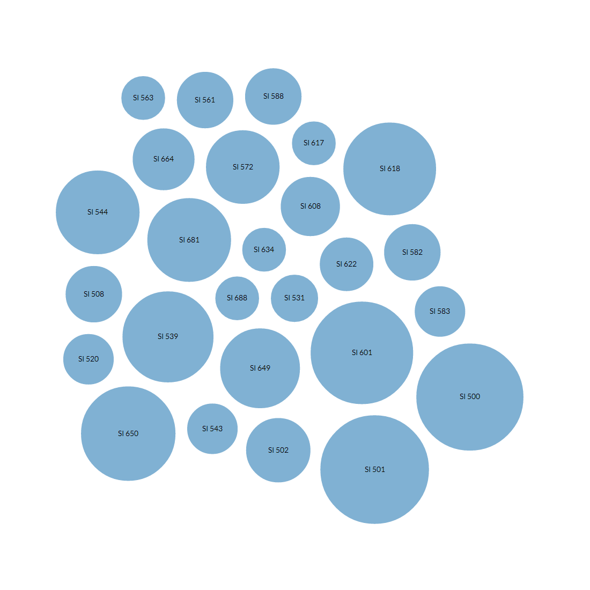
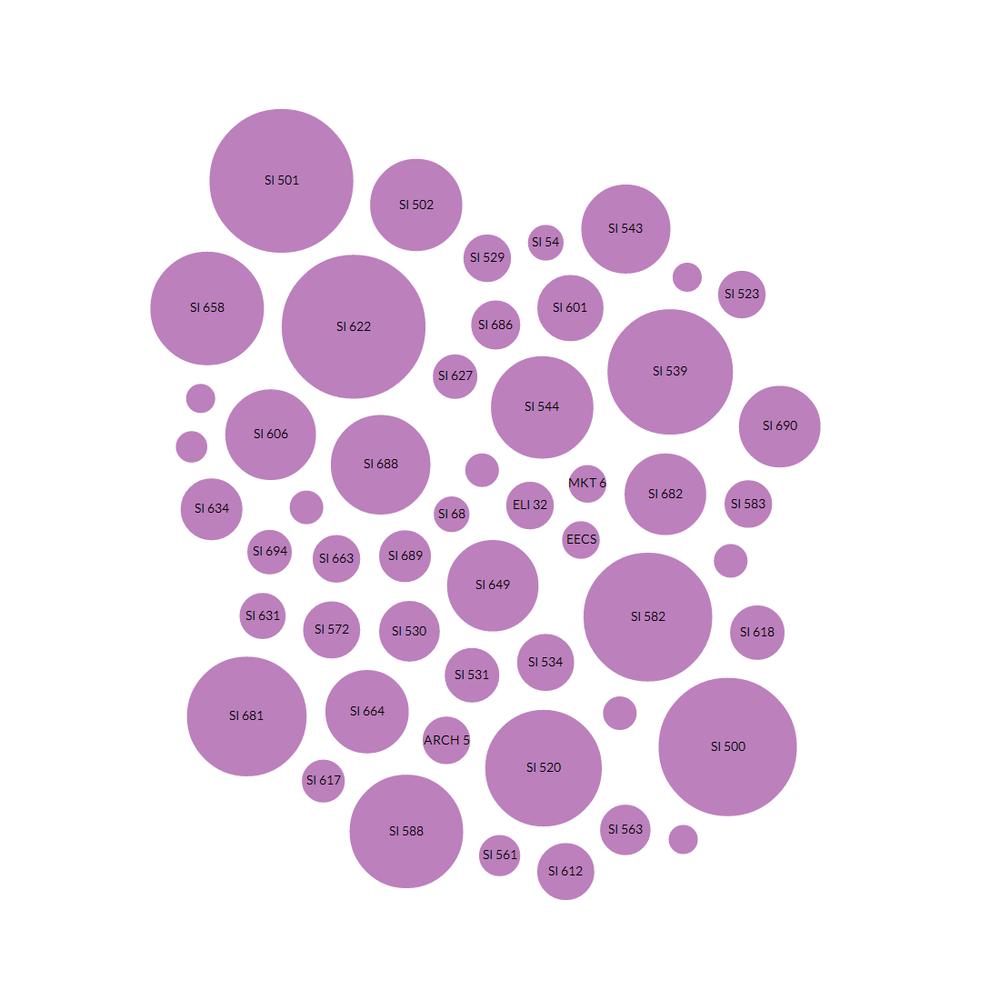
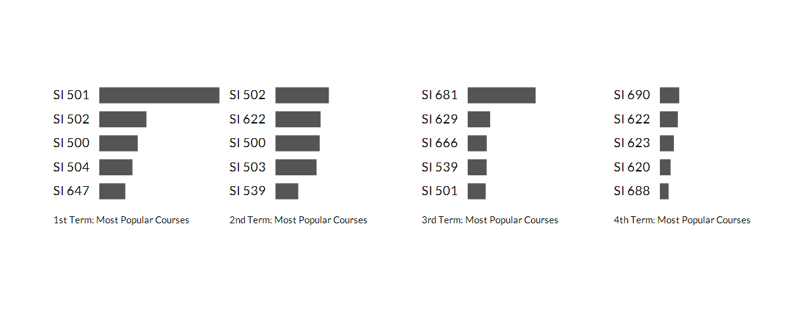

Team Members: Eric Koo, Chloe Ng, Krishna Vadrevu, Kevin Gao, Tiffany Liu
There are numerous specializations at UMSI and hundreds of potential courses. We wanted to create a tool that would allow both students and staff to explore the information contained in historical UMSI course registration data. Using Python for data processing and the Javascript D3 library for the interface, we created an interactive visualization of enrollment numbers and courses for the entire history of the school.
Data can be filtered by both by year and specialization. First is a histogram of total enrollment by year. Below, bubbles represent individual courses sized according to total number of enrolled students, allowing for quick discovery of most popular courses. Finally, bar charts below provide most popular courses by semester, allowing students to know not only what courses to take but when to take them.